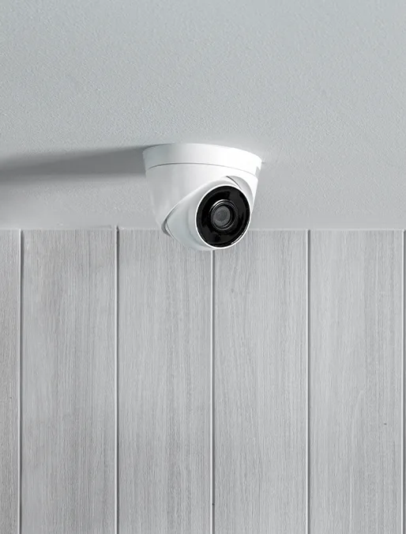
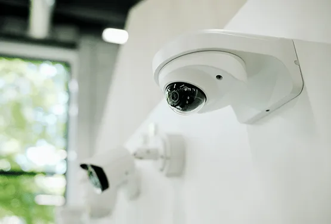
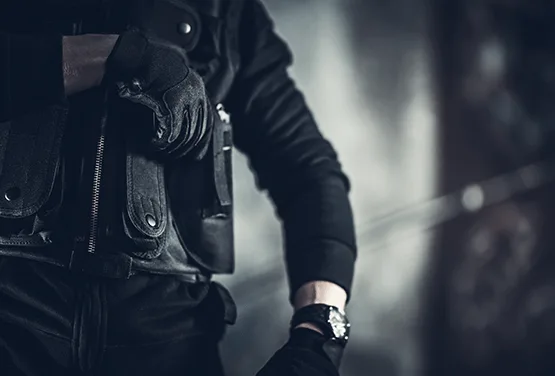

Ochrona domu i firmy, która dojeżdża.
Grupy interwencyjne, monitoring alarmów i kamer, ochrona fizyczna. Koncesja MSWiA, centrum alarmowe całą dobę.
Pokażemy, w ile minut grupa interwencyjna może być pod Twoimi drzwiami.
Wpisz adres albo wybierz miejscowość powyżej. Czas liczymy według mapy dróg.
Bezpieczeństwo od alarmu po interwencję
Każda usługa ma osobną podstronę z zakresem, przebiegiem i odpowiedziami na pytania, których ludzie szukają w Google.

Grupy interwencyjne
Dojazd patrolu na sygnał z systemu alarmowego, o każdej porze dnia i nocy.
Więcej o usłudze →
Ochrona domów i mieszkań
Alarm, czujki i powiadomienia w telefonie, dobrane do układu domu.
Więcej o usłudze →Monitoring alarmów
Centrum alarmowe odbiera sygnał, weryfikuje go i wysyła grupę interwencyjną.
Więcej o usłudze →
Systemy kamer
Montaż kamer z podglądem w telefonie dla domów, sklepów i firm.
Więcej o usłudze →
Konwojowanie wartości
Bezpieczny transport gotówki i wartości pieniężnych przez uzbrojoną formację.
Więcej o usłudze →Ochrona fizyczna
Ochrona osób, obiektów i wydarzeń przez licencjonowanych pracowników.
Więcej o usłudze →Dobierz ochronę domu w minutę
Zaznacz kilka rzeczy, a zobaczysz proponowany zestaw i orientacyjną cenę. My dostajemy zapytanie z kompletem danych.
Proponowany zestaw
Zanim wybierzesz ochronę
Konkretne odpowiedzi na pytania, które słyszymy od klientów. Pisane po to, żeby ułatwić decyzję, a nie żeby sprzedać za dużo.
Jak działa grupa interwencyjna: od włączenia alarmu do przyjazdu patrolu
Czujka wykrywa ruch, centrala wysyła sygnał, a kilka minut później pod domem stoi patrol. Pokazujemy krok po kroku, co dzieje się pomiędzy, kto podejmuje decyzje i od czego zależy skuteczność całej reakcji.
Czytaj poradnik →Alarm w domu: czujki, kamery czy monitoring 24/7? Co wybrać do domu jednorodzinnego
Czujki wykrywają, kamery rejestrują, monitoring reaguje. To nie są trzy konkurencyjne produkty, tylko trzy warstwy, z których składa się ochrona domu. Pokazujemy, jak je zestawić do konkretnego budynku.
Czytaj poradnik →Ile kosztuje ochrona domu z monitoringiem: od czego zależy cena montażu i abonamentu
Na koszt ochrony domu składają się dwie zupełnie różne kwoty: jednorazowa za sprzęt i montaż oraz miesięczna za monitoring i reakcję. Rozbieramy obie na części, żebyś wiedział, za co płacisz i o co pytać przy wycenie.
Czytaj poradnik →Jak zaczynamy
Wybierz usługę
Zadzwoń albo wyślij zapytanie z konfiguratora. Doradzimy, jaki zakres ochrony ma sens.
Umowa
Oględziny, dobór systemu i umowa z jasno opisanym zakresem i ceną.
Ochrona od pierwszego dnia
Montaż, podłączenie do centrum alarmowego i gotowość grupy interwencyjnej.
Jesteśmy pod telefonem całą dobę
SUFO Security
ul. Sobieskiego 352/U1, 84-200 Wejherowo